1040B54 fuel line from manifolds - r r
- Path
- Procedures > 10 ENGINE > 1040 FUEL TANK AND PIPES > 1040B FUEL SUPPLY/RETURN CIRCUIT PIPE > 1040B54 fuel line from manifolds - r r
- Kind
- repair procedure (removal / refitting; the operation number is the code)
- Applies to
- all engines; all production periods
- Interactive page
- https://sloeber94.github.io/elrnDB-fDbl/en/#/2584395
Applies to: all engines; all production periods
 Removing
Removing
 Refitting
RefittingEnsure that the ignition key is in the OFF position, then disconnect the negative battery terminal.
 | Name | Connector |
|---|---|---|
- | Battery | A1 |
1. Disconnect the electrical connection from the air flow meter.
| Name | Connector |
|---|---|---|
1 | Air flow meter | K41 |
2. Loosen the band and disconnect the the turbocharger air inlet sleeve from the rigid pipe, air flow meter side.
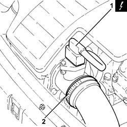
Applies to: all engines; all production periods
Removing
RefittingPosition the vehicle on the ramp.
Proceed with the removal 5530B10 battery - r+r .
Proceed with the removal 5530B52 Battery DRIP TRAY/SUPPORT - R.R. .
Proceed with the removal 1044B10 fuel filter assembly - r + r or replace .
Proceed with the removal 3330D24 vacuum pipe for brake servo - r+r .
Proceed with the removal 7210E22 R.R. WINDSCREEN BASE TRIM .
1. Undo the nuts (1a) and remove the protection (1b).
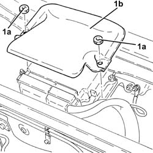
Applies to: all engines; all production periods
1. Loosen the band (1a) and disconnect the flexible hose (1b) from the air intake.
2. Remove the air filter (2a) complete with air flow meter (2b) by releasing from the underlying pins and then from the rear fastening.
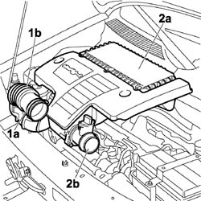
Applies to: all engines; all production periods
1. Disconnect the electrical connections (1a) and (1b) from the diesel electronic injection system control unit.
| Name | Connector |
|---|---|---|
1a | Engine management ECU | M10A |
| Name | Connector |
|---|---|---|
1b | Engine management ECU | M10B |
2. Undo nut (2a) and disconnect earth lead (2b).
| Name | Connector |
|---|---|---|
2b | Earth on engine | C60 |
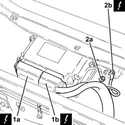
Applies to: all engines; all production periods
Undo the fuel filler cap and remove it to discharge the pressure in the system.
1. Disconnect the quick-release connector for the front fuel return pipe, fuel filter side.
2. Disconnect the rapid attachment for the front fuel return pipe, rear fuel return pipe side.
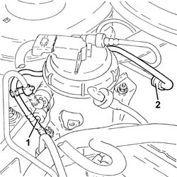
Applies to: all engines; all production periods
1. Undo the nut (1a) and move the plug preheating control unit (1b) aside without disconnecting the electrical wiring.
2. Undo the nuts (2a) securing the cable pass (2b).
3. Withdraw the wiring complete with electrical connections from the engine bulkhead.
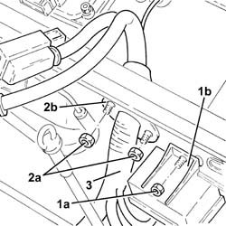
Applies to: all engines; all production periods
1. Disconnect the rapid attachment on the front fuel return pipe, single fuel manifold pipe side.
2. Undo the bolts (2a) and open the pipe passage channel (2b).
3. Remove the front fuel return pipe (3a) after releasing it from the bands (3b).
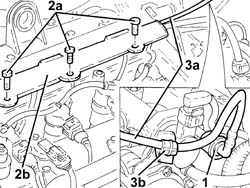
Applies to: all engines; all production periods
1. Loosen the band and disconnect the air supply hose from the heat exchanger to the inlet manifold, throttle body side.
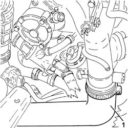
Applies to: all engines; all production periods
Refitting
RemovingPlace the front fuel return pipe back in its housing and fix it using the bands.
Close the pipe passage channel and secure it with the bolts.
Connect the rapid connector for the front fuel return pipe, rear fuel return pipe side.
Connect the quick-release connector for the front fuel supply pipe, fuel filter side.
Connect the rapid attachment of the front fuel return pipe, single fuel manifold pipe side.
Fit the air filter complete with air flow meter in its seating, engaging it in the rear attachment and then in the underlying pins.
Connect the flexible hose to the air intake on the crossmember and tighten the fixing band.
Connect the air intake sleeve to the turbocharger, air flow meter side, and tighten the band.
Connect the electrical connection to the air flow meter.
| Name | Connector |
|---|---|---|
- | Air flow meter | K41 |
Connect the battery negative terminal.
| Name | Connector |
|---|---|---|
- | Battery | A1 |
Applies to: all engines; all production periods
1. Remove the clip (1a) and undo the connector of the rigid pipe from master cylinder to front right brake (1b), flexible pipe side.
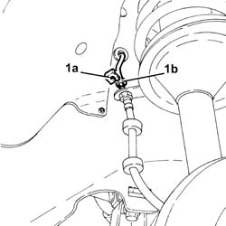
Applies to: all engines; all production periods
1. Undo the connector (1a) and disconnect the rigid pipe from master cylinder to front right brake (1b), master cylinder side.
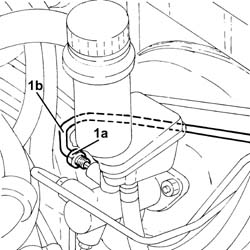
Applies to: all engines; all production periods
1. Remove the rigid pipe from master cylinder to front right brake after releasing it from its fixings.
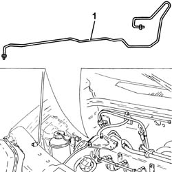
Applies to: all engines; all production periods
Drain the air conditioning system 5040A10 Air conditioning refrigerant CIRCUIT - Draining and Refilling .
1. Loosen the band and disconnect the coolant return pipe from the engine coolant supply reservoir.
2. Undo the bolts (2a) and move the engine cooling reservoir (2b).
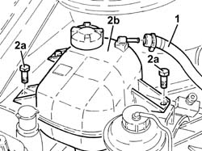
Applies to: all engines; all production periods
1. Undo the nut (1a) and disconnect the pipe from evaporator to compressor inlet pipe (1b), compressor inlet pipe side.
2. Release the pipe from evaporator to compressor inlet pipe from the fixing band.
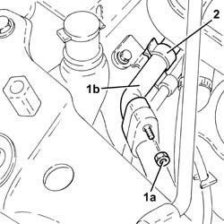
Applies to: all engines; all production periods
1. Undo the bolt on the bracket securing the air conditioning pipes to the bodyshell.
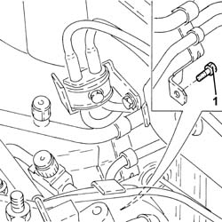
Applies to: all engines; all production periods
1. Undo the nut (1a) and disconnect the pipe from evaporator to compressor inlet pipe (1b), expansion valve side.
2. Undo the nut (2a) and disconnect the pipe from the dehydrating filter to the expansion valve (2b), expansion valve side.
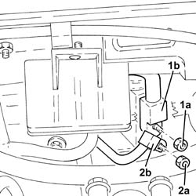
Applies to: all engines; all production periods
1. Remove the pipe from evaporator to compressor inlet pipe.
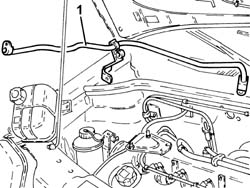
Applies to: all engines; all production periods
1. Undo the bolts on the bracket securing the fuel pipes to the bodyshell.
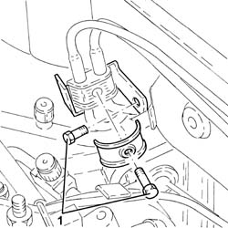
Applies to: all engines; all production periods
1. Disconnect the rapid attachment on the front fuel return pipe from the fuel return manifold pipe.
2. Release the fuel pipes from the fixings on the wing and engine compartment bulkhead.
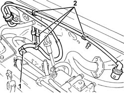
Applies to: all engines; all production periods
Proceed with the removal 7055B54 under-engine guard - r r .
1. Undo the fixings (1a) and remove the fuel pipes protection (1b).
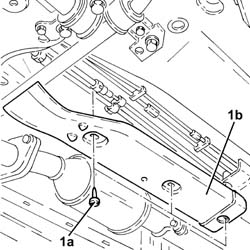
Applies to: all engines; all production periods
1. Disconnect the rapid attachment for the front fuel supply pipe to the intermediate one.
2. Disconnect the rapid attachment of the front fuel return pipe to the intermediate one.
3. Release the front fuel supply/return pipes from the fixings on the under the bodyshell.
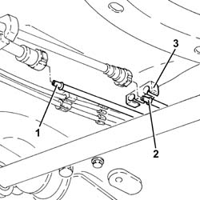
Applies to: all engines; all production periods
1. Withdraw and remove the front fuel return pipe.
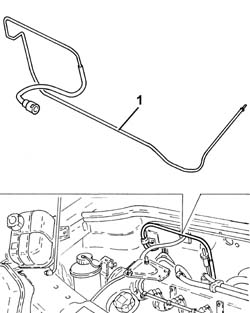
Applies to: all engines; all production periods
Refitting
RemovingRefit the front fuel return pipe in its seating.
Secure the front fuel supply/return pipes to the fixing under the bodyshell.
Connect the rapid attachment of the front fuel return pipe to the intermediate one.
Connect the rapid attachment of the front fuel supply pipe to the intermediate one.
Refit the fuel pipes protection in its seating and secure it with the fixings.
Proceed with the refitting 7055B54 under-engine guard - r r .
Secure the fuel pipes to the fixings on the wing and engine bulkhead.
Connect the rapid attachment of the front fuel return pipe from the fuel return manifold pipe.
Tighten the bolts on the bracket securing the fuel pipes to the bodyshell.
Refit in its seating the pipe from evaporator to compressor inlet pipe.
1. Connect the pipe from dehydrating filter to expansion valve (1a), expansion valve side, and tighten the nut (1b) to the specified torque.
 | Fastening | Component | Ø | Value (daNm) |
|---|---|---|---|---|
1b | Nut | PIPE FRM FILTER/DEHYDRATOR TO EXPAN VALV | M6 | (Expansion valve side) 0.7 ÷ 1.1 |
2. Connect the pipe from evaporator to compressor inlet pipe (2a), expansion valve side, and tighten the nut (2b) to the specified torque.
| Fastening | Component | Ø | Value (daNm) |
|---|---|---|---|---|
2b | Nut | PIPE FROM EVAPORATOR | M6 | (Expansion valve side) 0.7 ÷ 1.1 |
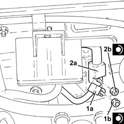
Applies to: all engines; all production periods
Tighten the bolt on the bracket securing the air conditioning pipes to the bodyshell.
1. Secure the pipe from evaporator to compressor inlet pipe to the fixing band.
2. Connect the pipe from evaporator to compressor inlet pipe (2a), compressor inlet pipe side, and tighten the nut (2b) to the specified torque.
| Fastening | Component | Ø | Value (daNm) |
|---|---|---|---|---|
2b | Nut | PIPE FROM EVAPORATOR | M6 | (Compressor inlet pipe side) 0.7 ÷ 1.1 |
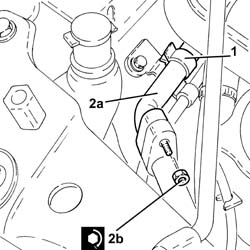
Applies to: all engines; all production periods
Refit the coolant reservoir in its seating and secure with its bolt.
Connect the coolant return pipe to the engine coolant supply reservoir and tighten the relevant band.
Refit in its seating the rigid pipe from master cylinder to front right brake and secure it.
1. Connect the rigid pipe from master cylinder to front right brake (1a), master cylinder side, and tighten the connector (1b) to the specified torque.
| Fastening | Component | Ø | Value (daNm) |
|---|---|---|---|---|
1b | Connector | RIGID PIPE TO FRONT BRAKES | M10 | (Master cylinder side) 1.3 ÷ 1.5 |
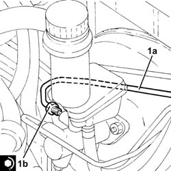
Applies to: all engines; all production periods
1. Tighten the connector on the rigid pipe from master cylinder to front right brake (1a), flexible pipe side, and secure it with the clip (1b).
| Fastening | Component | Ø | Value (daNm) |
|---|---|---|---|---|
1a | Connector | RIGID PIPE TO FRONT BRAKES | M10 | (Flexible pipe side) 1.3 ÷ 1.5 |
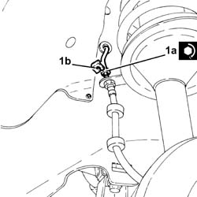
Applies to: all engines; all production periods
Connect the air supply hose from the heat exchanger to the inlet manifold, throttle body side, and tighten the band.
Fit the wiring complete with electrical connections for the diesel electronic fuel injection control unit through the passage on the engine bulkhead.
Tighten the cable pass nuts.
Connect the earth lead and fix it using the nut.
Connect the electrical connections to the diesel electronic injection control unit.
Place the protection back in its housing and fix it using the nuts.
Proceed with the refitting 7210E22 R.R. WINDSCREEN BASE TRIM .
Place the plug preheating control unit back in its housing and secure with the relevant nut.
Proceed with the refitting 3330D24 vacuum pipe for brake servo - r+r .
Proceed with the refitting 1044B10 fuel filter assembly - r + r or replace .
Proceed with the refitting 5530B52 Battery DRIP TRAY/SUPPORT - R.R. .
Proceed with the refitting 5530B10 battery - r+r .
Refill the air condiitoning system 5040A10 Air conditioning refrigerant CIRCUIT - Draining and Refilling .
Remove the car from the ramp.